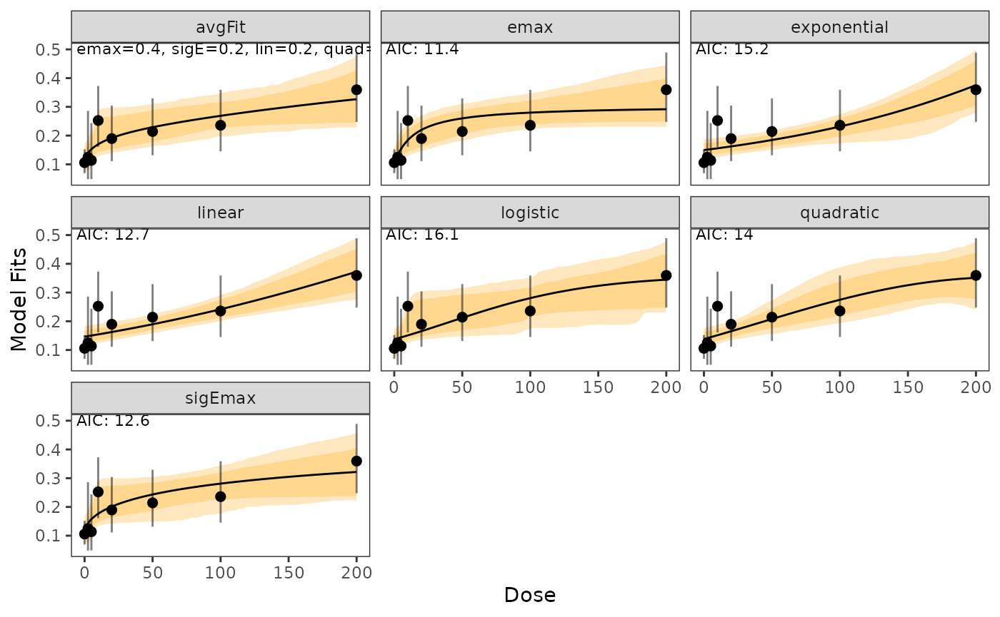
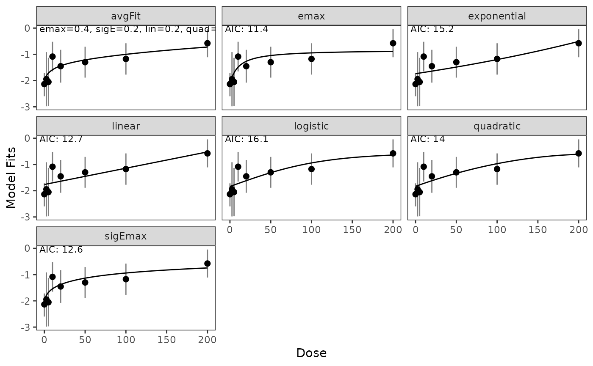

Trial Analysis Example of Bayesian MCPMod for Binary Data
2026-02-26
Source:vignettes/binary_endpoint.Rmd
binary_endpoint.RmdShow code
suppressPackageStartupMessages({
library(BayesianMCPMod)
library(RBesT)
library(DoseFinding)
library(dplyr)
})
set.seed(7015)
display_params_table <- function(named_list) {
round_numeric <- function(x, digits = 3) if (is.numeric(x)) round(x, digits) else x
tbl <- data.frame(
Name = names(named_list),
Value = I(lapply(named_list, function(v) {
if (inherits(v, "Date")) v <- as.character(v)
if (!is.null(names(v))) paste0("{", paste(names(v), v, sep="=", collapse=", "), "}")
else v
}))
)
tbl$Value <- lapply(tbl$Value, round_numeric)
knitr::kable(tbl)
}Introduction
This vignette demonstrates the application of the
BayesianMCPMod package for a binary endpoint. A more
detailed introduction is provided for the setting of a continuous
endpoint (analysis example
vignette).
Binary endpoints require modeling on the logit scale. We will use the
migraine dataset from the DoseFinding package as our
working example, which contains response rates after migraine treatment.
The prior (for the control group) will be based on historical trial
data.
This package makes use of the future framework for parallel processing, which can be set up for example as follows:
future::plan(future::multisession, workers = 4L)Kindly note that due to overhead a reduced number of worker nodes can be preferable and that for short calculations sequential execution can be faster.
Scale Conventions in BayesianMCPMod
- Internally,
BayesianMCPModfits binary endpoints on the logit scale. - The function argument
probability_scalecontrols whether outputs (summaries, predictions, plots) are back-transformed to probabilities. - In
simulateData(), outcomes are simulated on the response scale ifprobability_scale = TRUE. - In
getMED(),deltais interpreted on the probability scale ifprobability_scale = TRUE.
Calculation of a MAP Prior
For this example, in a first step, a meta analytic prior will be calculated. This prior is based on trials results for Diener et al. (2011), Ho et al. (2008) and Hewitt et al. (2011). Here, we assume the following historical results for the control group. Please note that only information from the control group will be integrated, leading to an informative mixture prior for the control group, while a non-informative prior will be specified for the active groups.
Show code
Our approach to establish a MAP prior is conducted in 3 steps. First
the information from the historical trials is used to establish a beta
mixture MAP prior (family=binomial).
In a next step this prior is robustified. Finally, since the
BayesianMCPMod procedures for binary endpoints require a
prior on the logit scale, we translate this prior to this scale via
sampling from the distribution, translating the results to the logit
scale and approximating via fitting of normal mixtures of conjugate
distributions. Please note that there would be other options to
establish a reasonable informative prior in this setting.
Show code
dose_levels <- c(0, 2.5, 5, 10, 20, 50, 100, 200)
# 1) Establish MAP prior (beta mixture distribution)
set.seed(7015) # re-set seed only for this example; remove in your analysis script
map <- gMAP(
cbind(r, n - r) ~ 1 | trial,
family = binomial,
tau.dist = "HalfNormal",
tau.prior = 0.5,
beta.prior = (1 / sqrt(0.1 * 0.9)),
warmup = 1000,
iter = 10000,
chains = 2,
thin = 1
)
#> Assuming default prior location for beta: 0
map
#> Generalized Meta Analytic Predictive Prior Analysis
#>
#> Call: gMAP(formula = cbind(r, n - r) ~ 1 | trial, family = binomial,
#> tau.dist = "HalfNormal", tau.prior = 0.5, beta.prior = (1/sqrt(0.1 *
#> 0.9)), iter = 10000, warmup = 1000, thin = 1, chains = 2)
#>
#> Exchangeability tau strata: 1
#> Prediction tau stratum : 1
#> Maximal Rhat : 1
#>
#> Between-trial heterogeneity of tau prediction stratum
#> mean sd 2.5% 50% 97.5%
#> 0.2710 0.2210 0.0106 0.2160 0.8290
#>
#> MAP Prior MCMC sample
#> mean sd 2.5% 50% 97.5%
#> 0.1190 0.0494 0.0454 0.1130 0.2340
prior <- automixfit(map) #fits mixture distribution from MCMC samples from above
p <- summary(prior)[1]
# 2) Robustify prior
prior_rob <- RBesT::robustify(priormix = prior,
mean = 0.5,
weight = 0.4)
# 3) Translate prior to logit scale (to approximate via normal mixture model)
r <- rmix(prior_rob, n = 1e4)
log_r <- RBesT::logit(r)
prior_ctr <- automixfit(log_r, type = "norm")
# Specification of reference scale (this follows the idea of [@Neuenschwander2016]).
sigma(prior_ctr) <- sqrt(1 / (p * (1 - p)))
# Specify a prior list
prior_trt <- RBesT::mixnorm(
comp1 = c(
w = 1,
m = logit(summary(prior)[1]),
n = 1
),
sigma = sqrt(1 / (p * (1 - p))),
param = "mn"
)
prior_list <- c(list(prior_ctr),
rep(x = list(prior_trt),
times = length(dose_levels[-1])))
dose_names <- c("Ctr", paste0("DG_", seq_along(dose_levels[-1])))
names(prior_list) <- dose_namesDose-Response Model Shapes
Candidate models are specified on the parameter scale using the
{DoseFinding} package. We will create a Mods object, which
will be used in the remainder of the vignette. Please note that the
models are specified on the logit scale.
models <- Mods(
linear = NULL,
sigEmax = c(50, 3),
quadratic = -1 / 250,
logistic = c(110, 15),
exponential = 80,
emax = 10,
doses = dose_levels,
placEff = RBesT::logit(0.118),
maxEff = RBesT::logit(0.3) - RBesT::logit(0.118)
)
plot(models)
Trial Data
We will use the trial data from the migraine data set available in
the DoseFinding package as our phase 2 trial data. We will
apply a logistic regression (without any additional covariates) to get
estimates on the logit scale.
data("migraine") # data set from the DoseFinding package
doses_fact <- as.factor(dose_levels)
n_patients <- migraine$ntrt
resp_rate <- migraine$painfree/n_patients
## Execution of logistic regression and readout of parameters
## Note that estimates are automatically on the logit scale.
log_fit <- glm(resp_rate ~ doses_fact - 1, family = binomial, weights = n_patients)
mu_hat <- coef(log_fit)
S_hat <- vcov(log_fit)Posterior Calculation
In the first step of Bayesian MCPMod, the posterior is calculated by combining the prior information with the estimated results of the trial (Fleischer F 2022).
post_logit <- getPosterior(prior_list, mu_hat = mu_hat, S_hat = S_hat)The summary of the posterior can be provided on the probability scale.
summary(post_logit, probability_scale = TRUE)
#> mean sd 2.5% 50.0% 97.5%
#> Ctr 0.1071168 0.02127962 0.06930686 0.1058282 0.1520040
#> DG_1 0.1359001 0.06177459 0.04833967 0.1248126 0.2859179
#> DG_2 0.1222136 0.05057452 0.04865093 0.1137505 0.2436500
#> DG_3 0.2562256 0.05432101 0.16104931 0.2524449 0.3726678
#> DG_4 0.1943149 0.04961478 0.11121906 0.1895612 0.3041997
#> DG_5 0.2184915 0.05083942 0.13146633 0.2142515 0.3293963
#> DG_6 0.2401204 0.05496681 0.14521827 0.2358212 0.3591977
#> DG_7 0.3618200 0.06188555 0.24769337 0.3594987 0.4889697Bayesian MCPMod Test Step
The testing step of Bayesian MCPMod is executed using a critical value on the probability scale and a pseudo-optimal contrast matrix.
A contrast matrix is generated based on the number of patients per dose group, see Fleischer F (2022) for more details. Please note that here also other options would be possible, e.g. using weight based on the observed variability.
The critical value is calculated using (re-estimated) contrasts for frequentist MCPMod to ensure error control when using weakly-informative priors.
contr_mat_prior <- getContr(
mods = models,
dose_levels = dose_levels,
dose_weights = n_patients)
set.seed(7015) # re-sets seed only for this example; remove in your analysis script
crit_pval <- getCritProb(
mods = models,
dose_levels = dose_levels,
cov_new_trial = S_hat,
alpha_crit_val = 0.05
)The Bayesian MCP testing step is then executed:
BMCP_result <- performBayesianMCP(
posterior_list = post_logit,
contr = contr_mat_prior,
crit_prob_adj = crit_pval)Here as well it should be noted that this evaluation happens on the logit scale.
BMCP_result
#> Bayesian Multiple Comparison Procedure
#> Significant: 1
#> Critical Probability: 0.9790239
#> Maximum Posterior Probability: 0.99999
#> Posterior Probabilities for Model Shapes
#> lin sigE quad log exp emax
#> Posterior Prob 0.9999900 0.9999338 0.9998325 0.9999509 0.9999644 0.9999885
#> Significant 1 1 1 1 1 1The testing step is significant, indicating a non-flat dose-response shape. All model shapes are significant.
Model Fitting and Visualization
In the model fitting step the posterior distribution is used as basis.
Both simplified and full fitting can be performed. Here we are focusing on the simplified fit. Furthermore we specify that the fit should be provided on the probability scale for easier interpretation of results.
The output of the fit includes information about the predicted effects for the included dose levels, the generalized AIC, and the corresponding weights.
model_fits <- getModelFits(
models = models,
dose_levels = dose_levels,
posterior = post_logit,
simple = TRUE,
probability_scale = TRUE)Plots of fitted dose-response models and an AIC-based average model including 80% and 95% credible bands on the probability scale:
plot(model_fits, cr_bands = TRUE)
In case models should be shown on the logit scale this can be done in the following way:
plot(model_fits, probability_scale = FALSE)
Estimates including predictions can be shown via:
| Name | Value | |
|---|---|---|
| avgFit | avgFit | 0.120, 0.140, 0.170, 0.300, 0.327 |
| emax | emax | 0.106, 0.133, 0.184, 0.288, 0.292 |
| exponential | exponential | 0.150, 0.151, 0.156, 0.294, 0.375 |
| linear | linear | 0.146, 0.148, 0.154, 0.303, 0.372 |
| logistic | logistic | 0.137, 0.141, 0.151, 0.323, 0.345 |
| quadratic | quadratic | 0.138, 0.141, 0.151, 0.325, 0.351 |
| sigEmax | sigEmax | 0.107, 0.143, 0.176, 0.305, 0.322 |
The bootstrap-based quantiles can also be directly calculated via the
getBootstrapQuantiles() function and a sample from the
model fits can be bootstrapped using
getBootstrapSamples().
For this example, only 10 samples are bootstrapped for each model fit.
set.seed(7015) # re-sets seed only for this example; remove in your analysis script
bootstrap_quantiles <- getBootstrapQuantiles(
model_fits = model_fits,
quantiles = c(0.025, 0.5, 0.975),
doses = dose_levels,
n_samples = 10)Assessment of the Minimally Efficacious Dose
The Minimally Efficacious Dose (MED) per model shape can be assessed
with the function getMED(). The effect needs to be
specified on the probability scale.
getMED(
delta = 0.16, # on probability scale
model_fits = model_fits,
dose_levels = seq(min(dose_levels), max(dose_levels), by = 1))
#> avgFit emax exponential linear logistic quadratic sigEmax
#> med_reached 1 1 1 1 1 1 1
#> med 118 59 161 153 117 121 78Additional Note
Testing, modeling, and MED assessment can also be combined via
performBayesianMCPMod():
BMCPMod_result <- performBayesianMCPMod(
posterior_list = post_logit,
contr = contr_mat_prior,
crit_prob_adj = crit_pval,
simple = TRUE,
delta = 0.16,
probability_scale = TRUE
)